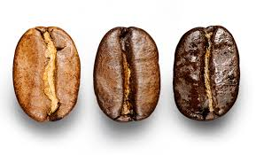
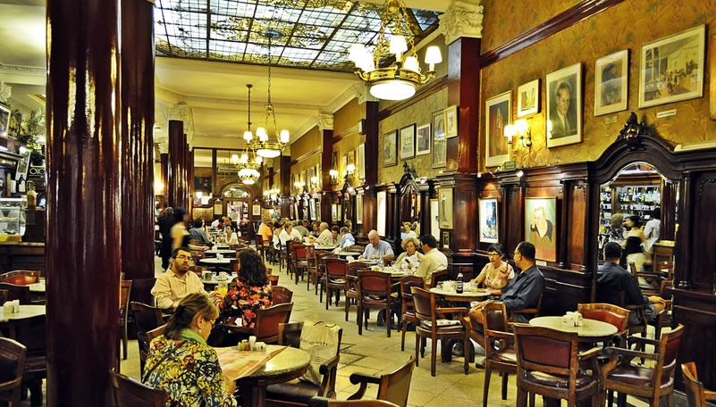

El olor al café, a unos granos recién tostados, es la mejor bienvenida que cada día planificamos para brindarles cuando abrimos las puertas de nuestras tiendas. Pero eso es sólo el comienzo.

De cuerpo entero, un poco ahumado, con notas cítricas, con fuerte presencia de chocolate…el desafío que tenemos constantemente es que cada uno de nuestros clientes encuentre su mezcla favorita y a la vez, que explore nuestras amplias selecciones más singulares.Para alcanzarlo nos abastecemos de los mejores granos de café arábicos siguiendo siempre estrictos principios éticos.
Nuestro tostado Markitos
Cada café que ofrecemos exige un perfil de tostado único para crear una taza con el máximo aroma, acidez, cuerpo y sabor. Al trabajar en un delicado balance en calor, tiempo y arte, nuestros maestros en el tostado hacen resaltar estas únicas características de cada grano de café.

Rubio
El café Markitos tostado rubio es tostado en menos tiempo, tiene un cuerpo ligero y sabores suaves
Medio
El café con tostado medio es balanceado con sabores agradables y enriquecidos.
Oscuro
Los cafés con tostado oscuro presentan un cuerpo completo y sabores fuertes y robustos.
Descubre los métodos de preparación en Cafe Markitos,¿Cuál es el correcto para vos?
Desde el cultivo responsable hasta el tostado, cada detalle en la elaboración de manera artesanal es fundamental para poder disfrutar de una taza de café Markitos. Y además de la esencia de los granos, sabemos que la forma en la que se prepara el café tiene un efecto sorprendente en el sabor de cada taza y define su cuerpo.

Es por eso que nuestros magníficos baristas se enfocan en crear diariamente rituales escogiendo diferentes métodos de preparación para que sean nuestros clientes quienes se sorprenden. Así, de la mano de las explicaciones de nuestros expertos, no sólo cultivarán la curiosidad sino que podrán seleccionar el mejor método para su experiencia de Cafe Markitos.
Nuestra historia en Argentina
Nuestra Historia
Historia en Argentina

Si hay una época en la que cualquier porteño disfruta de tomarse un buen café entre las callecitas de Buenos Aires o en algún barrio pintoresco, esa es sin dudas el invierno. En el país más austral del mundo, juntarse a tomar un café representa una tradición muy arraigada y forma parte de su tramado social cotidiano.
Por eso, con el aire frío de un 30 de mayo de 2008, cuando CafeMarkitos abrió su primera tienda en la Argentina, en el Alto Palermo Shopping, el desafío fue -y es- atrapante: conquistar desde la experiencia a una comunidad exquisita y habituada a disfrutar del café desde toda perspectiva posible.
A 13 años de ese mayo, esa aventura continúa y diariamente 131 tiendas de CafeMarkitos abren sus puertas cada mañana en todo el país. Con presencia en Buenos Aires, Rosario, Córdoba, Neuquén y Mendoza, actualmente más de 3.500 partners trabajan para que cada argentino disfrute de la personalización y la variedad de la experiencia Markitos cuando se acerca a nuestras tiendas. Y esa es, al fin y al cabo, nuestra mayor satisfacción.